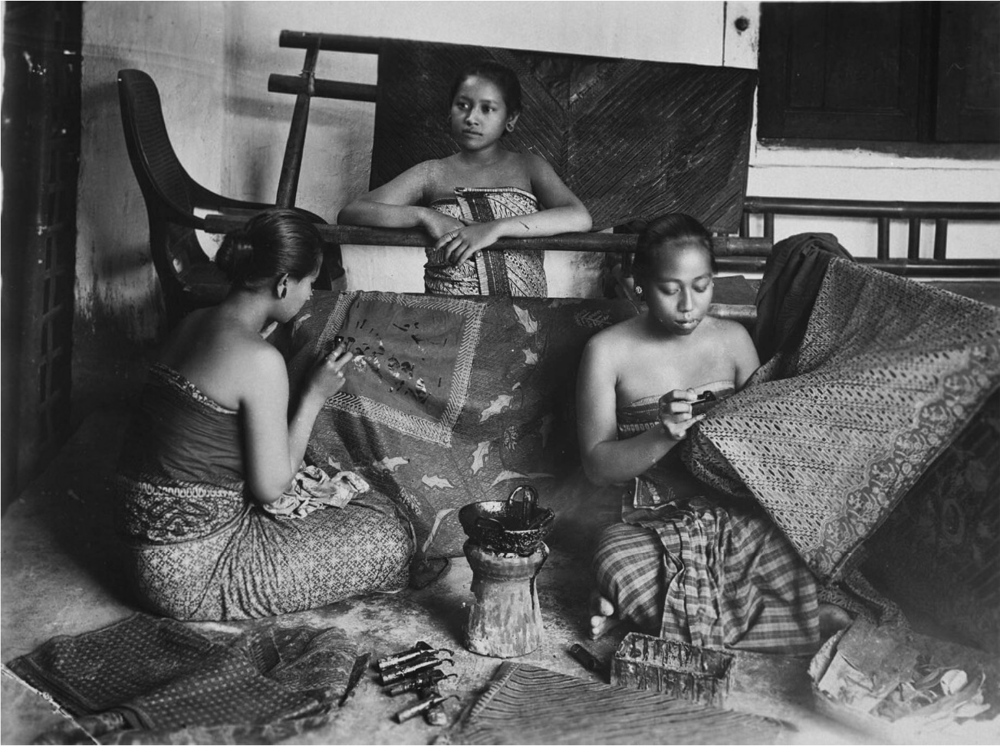
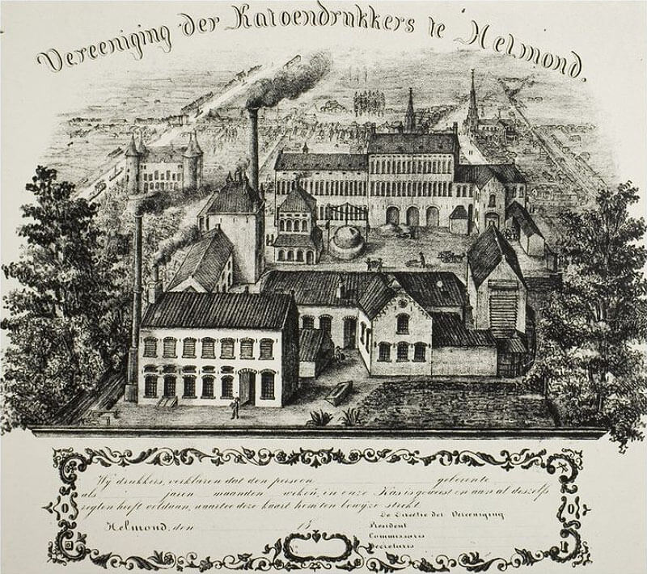
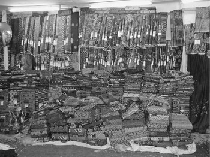

17e et 18e siècle : Indonésie
L’histoire du wax commence en Indonesie, avec l'apparition du “batik” au XIème siècle. Le batik est une technique née sur l’ile de Java qui consiste à dessiner un motif des deux côtés d’un textile avec de la cire d'abeille, avant de le teindre.
Le mot «batik», en javanais, signifie «pointillés». Les indonésiens utilisent le «canting», instrument qui permet de déposer de petites gouttelettes de cire sur le tissu, afin de former un dessin. Il faut parfois plusieurs mois pour confectionner un seul «sarong», nom que donnent les indonésiens à ces tissus artisanaux. Ces sarongs étaient réservés aux classes élevées de Java, parfois même uniquement à la famille royale.
Ces créations artisanales vont se voir transformées par la colonisation. En 1816, la Hollande, déjà présente dans la région, colonise l'ensemble de l’archipel Indonesien et décide de fabriquer industriellement des sarongs. En 1852 l’entreprise “Perevinaire”, crée une machine baptisée “la Javanaise” inspirée de la machine française “la Perrotine” qui imprime des billets de banque. Leur ambition est de commercialiser ces textiles et de les diffuser dans toute l'Indonésie, mais c’est un échec.
En 1872 les javanais trouvèrent un moyen d’accélérer la production du batik artisanal, avec le «tjap», un tampon de bois recouvert de fils de cuivre, ce qui leur permit de réduire les coûts de fabrication et donc de le rendre plus abordable. La population locale privilégie l’achat de sarong artisanal, plus abordable et de meilleure qualité par rapport aux textiles importés de Hollande. Les Hollandais sont donc contraints de chercher un autre marché pour leurs textiles.

Petite usine de batik à Java en 1915, source : Tropenmuseum, Amsterdam
19e siècle : Pays Bas
Après leur défaite cuisante en Indonésie, la Hollande cherche un nouveau marché pour ses tissus.
Ebenerser Brown Fleming, un marchand écossais, qui faisait dans les années 1860, commerce avec l’Indonésie et l’Afrique de l’Ouest eu vent des besoins de textiles en Afrique de l’Ouest et va passer commande auprès de “Perevinaire” pour importer des “batiks” hollandais en Afrique. Rapidement, d’autres entreprises tels que P.F. Van Vlissigen Ankersmit et Roessingh s'implantent sur le marché africain et le batik devient le wax, en référence à la cire d’abeille utilisée pour sa confection.
Les Pays-Bas sont les premiers à avoir produit du Wax, ce sont d’ailleurs aujourd’hui les seuls à maintenir cette activité, à Helmond, avec l’usine Vlisco. Ont également participé à la production européenne du Wax : la Suisse (de 1928 à 1974) par exemple, et l’Angleterre (de 1902 à 2007) dans la région de Manchester plus précisément, avec notamment la société ABC (Arnold Brunnschweiler & Company). Tous participent à l’acheminement du Wax vers l’Afrique.
Vers 1960, des usines commencèrent à s'installer en Afrique. En 1966, les néerlandais implantent une usine au Ghana, appelée Ghana Textiles Printing Company, futur GTP, et Uniwax en Côte d’Ivoire en 1968. Cela permet alors à la population locale de se procurer des tissus plus accessibles financièrement. La production aux Pays-Bas fut donc réduite pour se concentrer sur la confection d’un Wax de luxe.

Première usine Vlisco en 1864, source : Regional Historisc Centre Eindhoven
20e siècle : Ghana
La toute première cargaison de Wax débarque en Afrique en 1893, au Ghana. L'importation du wax vient premièrement d’une raison économique; mais ce commerce va s’accompagner d’une histoire et de nombreux mythes.
L’entreprise Vilsco introduit le mythe selon lequel le wax aurait fait son apparition en afrique grâce à des guerriers Ashanti de l’armée néerlandaise des Indes orientales recruté pour mater des insurrections dans les indes orientale néerlandaise et qui serait revenus de Borneo et Sumatra avec des batiks qui aurait été populaire au Ghana instantanément.
C’est à la fin du XIXe siècle que le Wax a fait son apparition en Afrique.
Aujourd’hui, il fait partie intégrante de la vie quotidienne et tout le monde
s’accorde à dire qu’il est un des symboles de l’identité africaine.

Marché de wax dans le sud du Ghana, source : Cambridge University Press